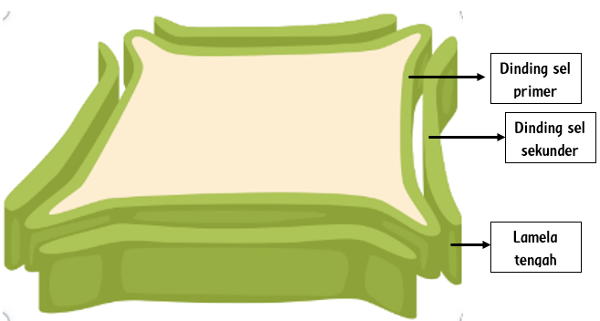
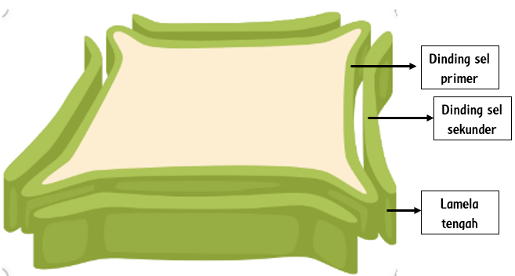
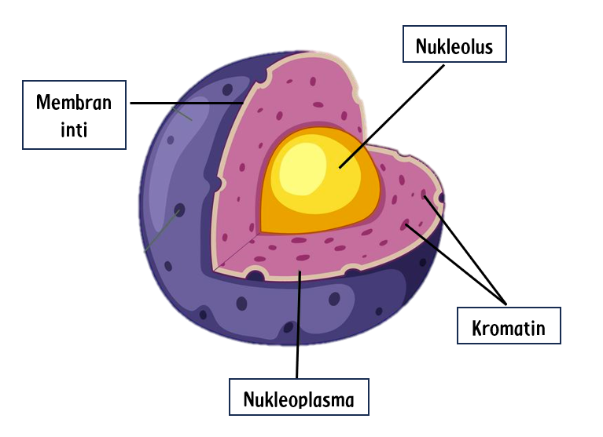
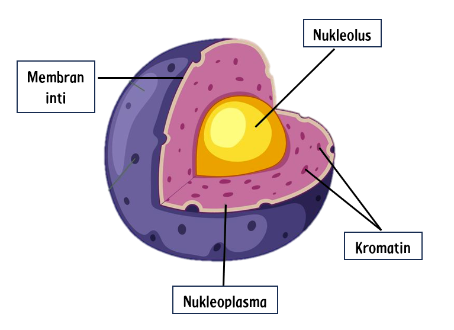
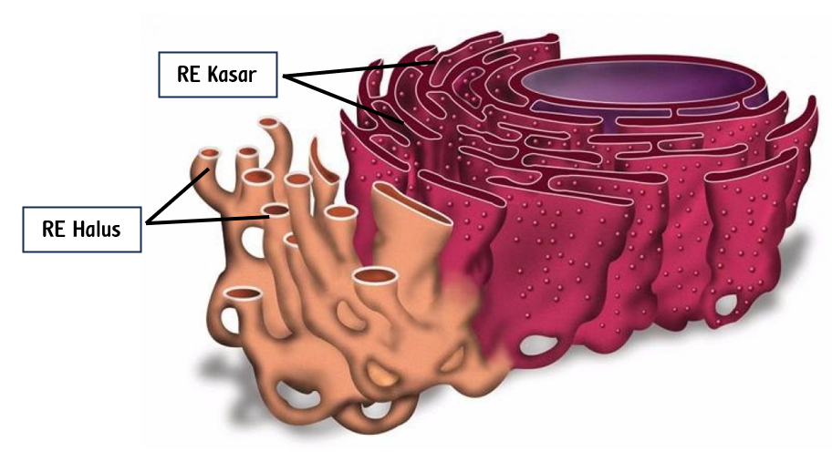
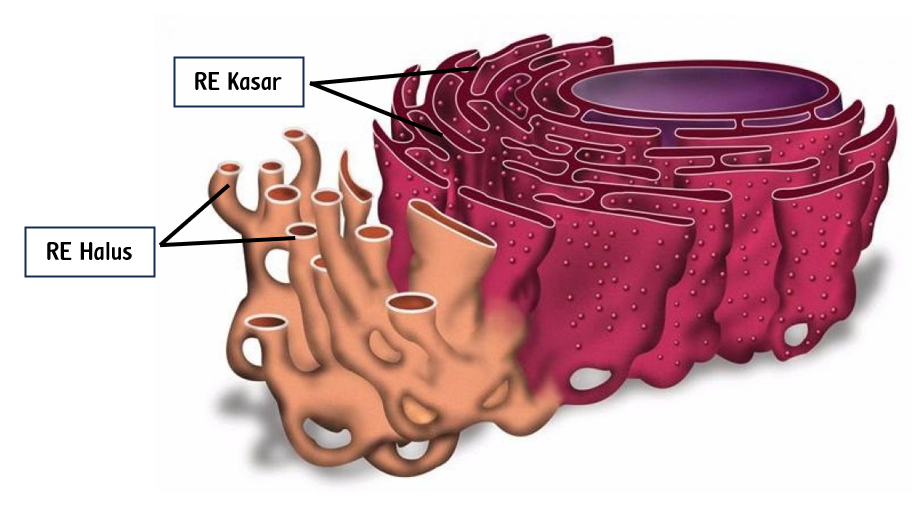
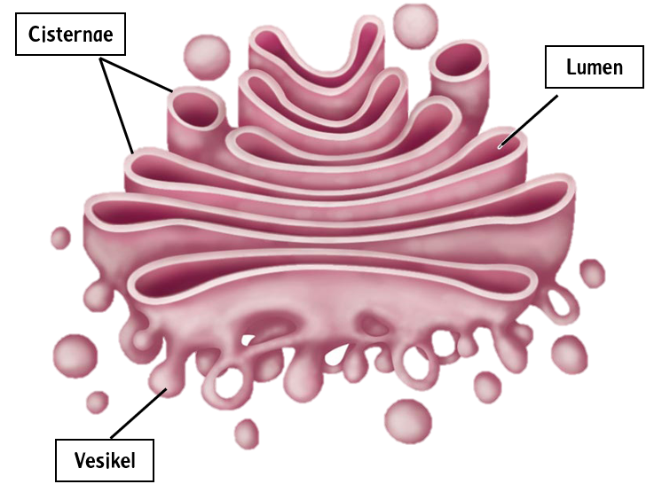
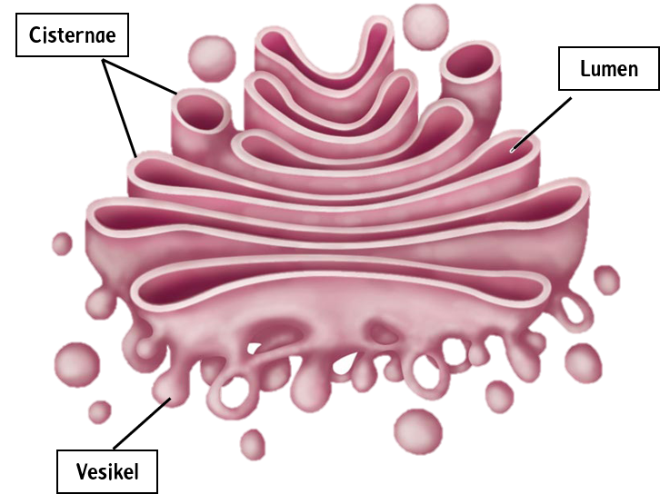

(Sumber : canva.com)
Dinding Sel
Dinding sel merupakan struktur penting yang membedakan sel hewan dengan sel tumbuhan. Struktur dinding sel tumbuhan memiliki tiga lapis yaitu dinding sel primer, dinding sel sekunder, dan lamela tengah.
Lapisan Dinding Sel
- Dinding Sel Primer: Dinding sel primer memiliki dinding yang relatif tipis dan lentur yang memungkinkan pertumbuhan sel. Tersusun dari selulosa, hemiselulosa, dan pektin.
- Dinding Sel Sekunder: Lapisan yang lebih tebal dan kuat, terbentuk setelah sel berhenti tumbuh. Mengandung lebih banyak selulosa dan lignin yang menambah kekuatan dan kekakuan.
- Lamela Tengah: Lapisan tipis yang mengandung pektin dan berfungsi untuk "merekatkan" sel-sel tetangga.
Fungsi Dinding Sel
- Melindungi sel dari kerusakan fisik: Dinding sel melindungi sel dari berbagai jenis kerusakan fisik.
- Memberikan kekuatan dan ketahanan terhadap tekanan osmotik: Dinding sel memberikan kekuatan dan ketahanan terhadap tekanan osmotik, sehingga sel tetap stabil dalam berbagai kondisi lingkungan.
- Menjaga bentuk sel: Dinding sel mempertahankan bentuk sel yang tetap, memungkinkan sel tumbuhan untuk tumbuh tinggi dan tetap tegak.
- Memungkinkan pertukaran nutrisi dan metabolit serta melindungi sel dari patogen dan racun: Dinding sel memungkinkan pertukaran nutrisi dan metabolit, serta melindungi sel dari serangan patogen dan racun (Taiz et al., 2015).
 

 

 
